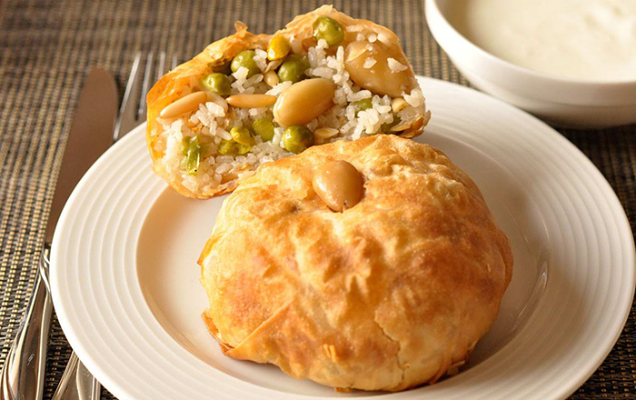

الأوزي

ما هي الأوزي ؟
يعدُّ طبق الأوزي من الأطباق اللذيذة والمُفضّلة عند الغالبيّة، وهو من الأطباق الشعبيّة التي انتشرت في غالبيّة الدّول العربيّة، والذي أصبح طبقًا رئيسًا في العديد منها،
ولا سيما في شهر رمضانَ المبارك، ويُقال إنّ الأوزي ذا أصلٍ سوريّ، وقيل أيضًا إنّه انتقل من تركيا إلى سوريا، ولا سيما العاصمة دمشق التي أصبح طبقُ الأوزي أحد أشهر أطباقها،
وهو من الأطباق الغنيّة؛ حيث يحتوي على بعض أنواع الخضار التي سيلي ذكرُها، وبهارات الأوزي الخاصّة، واللحومِ بنوعيها: فإمّا أن يحضَّر بلحم الدجاج، وإمّا أن يُحضَّر باللحوم الحمراء،
بالإضافة إلى الأرزّ، فهو طبقٌ متنوّعُ الفوائد والقيم الغذائيّة، ويمكن تقديمُه إمّا كطبقٍ من الأرزّ الشهيّ، أو بوضع الأرزّ في عجينةٍ مّخصّصةٍ
على شكل صُرّةٍ وتشوى في الفرن، وهي من الأطباق سهلةِ التحضير، وسيعرض المقالُ فيما يأتي طريقة عمل الأوزي بالدجاج، وطريقة عمل الأوزي باللحم.
المقادير
- دجاجة، مغسولة ومقطعة قطع
- بصلة كبيرة مفرومة
- جزر مقطع مكعبات
- كوب ذرة
- كوب بازيلاء
- ملعقة كبيرة زيت
- ملعقة صغيرة بهار
- ملعقة صغيرة كمون
- ملعقة صغيره قرفة ناعمة
- ملعقة صغيرة زنجبيل
- ملعقة صغيرة جوزة الطيب
- ملعقة صغيرة بهارات أوزي
- ورقة غار
طريقة عملها
- اغسلي الأرز جيدا.
- انقعيه لمدة 30 دقيقة قبل الاستعمال في ماء فاتر.
- في وعاء غير لاصق على النار سخني ثم ضيفي البصل وقومي بالتقليب حتى يتحول البصل للون الذهبي.
- ضيفي قطع الدجاج و ملح و ورق الغار و قومي بالتقليب حتى يجف ماء الدجاج بالكامل.
- غطي الدجاج بالماء و اتركيه على نار هادئة حتى تمام النضج.
- في وعاء آخر على النار سخني الزيت.
- ضيفي الجزر و الذرة و البازيلاء و قومي بالتقليب.
- ضيفي الملح و الفلفل الاسود و قلبي.
- ضيفي بعض الماء و خففي النار واتركي الوعاء حتى تمام نضج الخضار.
- صفي الأرز من الماء.
- تبليه بالبهارات و الكمون و القرفة و الفلفل الاسود وبهارات الاوزي وجوزة الطيب واخلطيهم جميعا معا جيدا.
- ضيفي الارز المتبل الى الدجاج.
- غطي الوعاء حتى غليان الماء.
- هدئي النار واتركي الوعاء حتى ينضج الأرز.
- ارفعي الدجاج فى صينية و ضيفي اليه القليل من الزيت.
- ادخلي الصينية الفرن وافتحي الشواية لتحمير الدجاج.
- عند التقديم ضعي في صحن التقديم الارز وفوقه الخضار و زيني الوجه بالزبيب و اللوز.
- على جانبي الطنجرة رصي قطع الدجاج.
- تقدم ساخنة.